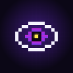
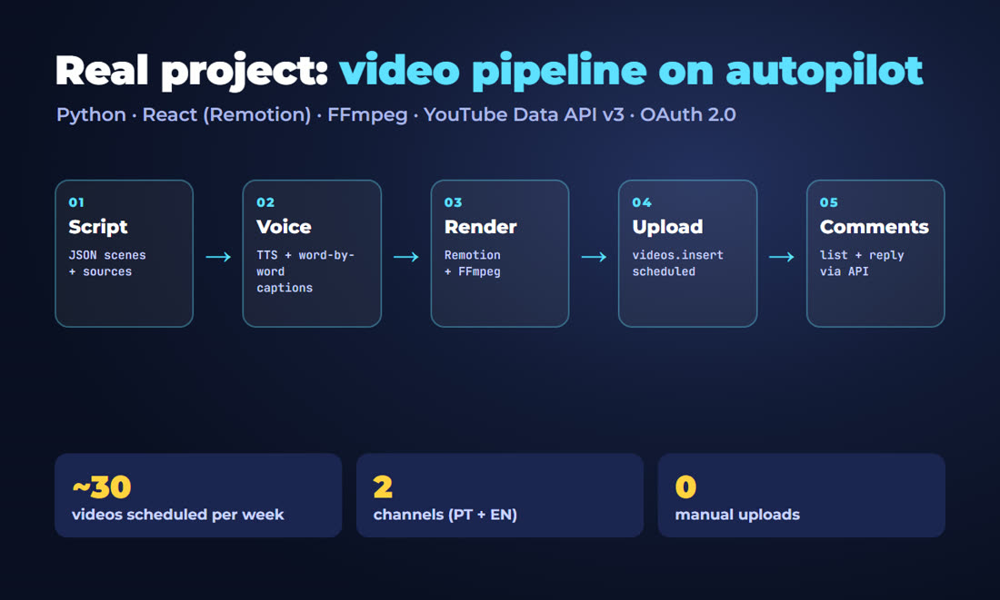
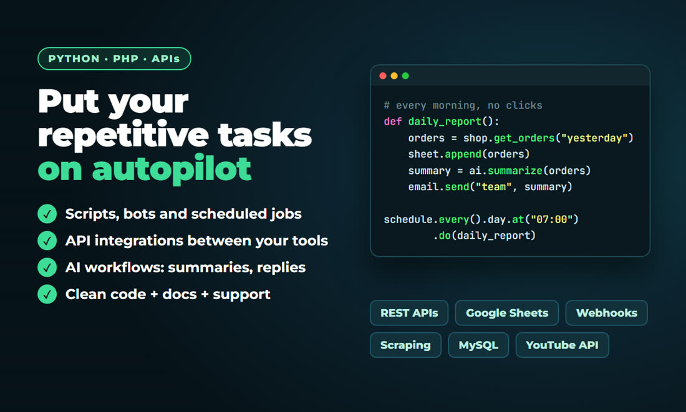

Pedro L.
I build systems that do the repetitive work: Python automations, API integrations and a video pipeline that publishes about 30 videos a week on two YouTube channels with no manual uploads. Brazilian, working in English and Portuguese, developing systems since 2018 and invoicing through my own company.
- Python
- PHP · MySQL
- JavaScript
- REST APIs · OAuth
- YouTube Data API
- FFmpeg
- React (Remotion)
- Whisper
- Azure Speech
- PT ⇄ EN
Video production and publishing on autopilot

- Scripts as data: each video is a JSON file with scenes, sources and visuals, checked before rendering.
- Voice and captions: neural voice with the timing of every word, so captions highlight the word being spoken.
- Render: React (Remotion) for the animations, FFmpeg for audio at -14 LUFS and file sizes for each platform.
- Publishing: YouTube Data API with OAuth: title, description, tags, language and schedule, with a daily quota budget.
- After publishing: replies to comments through the API and a daily metrics snapshot.
# Licensed narration with word timings (Azure Speech SDK), used for client work
def azure_tts(text, voice, rate, mp3_path):
synth = speechsdk.SpeechSynthesizer(speech_config=cfg, audio_config=None)
words = []
def on_word(evt):
if evt.boundary_type == speechsdk.SpeechSynthesisBoundaryType.Word:
start = evt.audio_offset / 1e7
words.append({"start": start, "end": start + evt.duration.total_seconds(),
"text": evt.text})
synth.synthesis_word_boundary.connect(on_word)
res = synth.speak_ssml_async(ssml(text, voice, rate)).get()
Path(mp3_path).write_bytes(res.audio_data)
return words # -> word-by-word captions in the renderPython automations and API integrations

- Scheduled scripts and bots: reports, file processing, uploads and alerts.
- Integrations between your tools through REST APIs and webhooks (sheets, stores, YouTube, Telegram).
- AI steps where they help: summaries, classification and draft replies, always with a human check.
- Web systems in PHP and MySQL: admin panels, custom features and maintenance of existing systems.
- Clean code with a README, so you can run and change it later.
Short-form videos with researched scripts
Two sample Shorts, one in English and one in Portuguese, made with the same pipeline as my channels: hook in the first second, fact-checked script, licensed neural voice, word-by-word captions, 3D illustrations, sound effects and original music. Delivered as 1080x1920 MP4 with title, caption and hashtags.
My channels: Pixel Oculto (Portuguese) and Hidden Pixel (English).
Animated captions, word by word
Your video comes back with the spoken word highlighted, plus an .SRT file for YouTube, TikTok and Reels. Transcription runs locally (Whisper), so your footage is not sent to third-party services.
- Every transcript is proofread: in this demo the speech model heard "Dracast", and the delivered caption says "Dreamcast".
- Your colors, font size and words per line. English or Portuguese.
Script writing and PT ⇄ EN translation
A real script from my channels, written in Portuguese and adapted to English. It is an adaptation, not a word-for-word copy: same facts and sources, natural phrasing in each language.
Português
O cartucho do Nintendo Switch tem um gosto horrível. E é de propósito. Em dois mil e dezessete, quem colocou o cartão na boca sentiu um amargo fortíssimo. A Nintendo confirmou: o cartão tem uma camada de benzoato de denatônio, uma das substâncias mais amargas que existem. Ela não é tóxica. O motivo é o tamanho: o cartão é pequeno, e o amargo faz criança cuspir antes de engolir. A mesma substância vai em produto de limpeza, pelo mesmo motivo.English
The Nintendo Switch game card tastes awful. And it's on purpose. In twenty seventeen, people who put one in their mouth got a shockingly bitter taste. Nintendo confirmed it: the card is coated with denatonium benzoate, one of the most bitter substances known. It's non-toxic. The reason is the size: the card is tiny, and the bitter taste makes kids spit it out before swallowing. The same chemical goes into cleaning products, for the same reason.Sources: Mental Floss, Game Developer, Quartz.
Drag & Debug: an HTML5 game in vanilla JavaScript
A retro arcade game built with plain JavaScript and Canvas, no engine and no external files: drag a selection box around the pixel bugs to delete them in big combos, but don't select your files. Pixel art and sound are 100% generated in code, and it adapts to desktop and mobile, in landscape or portrait.